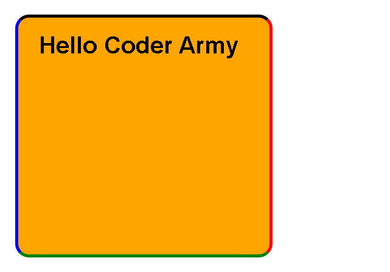
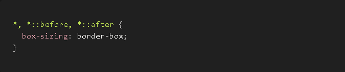
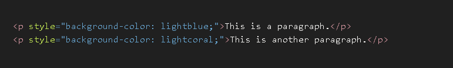
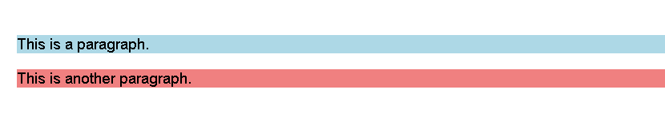
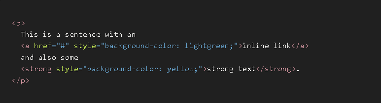

The Fundamental Truth: A web browser's primary job in laying out a page is not to understand "paragraphs" or "images" in a human sense. Its job is to render a series of rectangular boxes on the screen. Every single
HTML element, without exception, generates a box. This is the foundational concept upon which all CSS layout is built.
The Core Problem: If everything is just a generic box, how do we control its dimensions, its internal spacing, its outline, and its relationship with the boxes around it? A simple "box" is not enough. We need a more
detailed model.
The Logical Solution: We must define a multi-layered model for what a "box" is. It's not a single entity but a composite of several layers, each controllable by CSS. This leads directly to the four layers of the box model.
Demonstrate this: Open the browser's developer tools. Hover over any element on a page like Wikipedia. Show the colored overlays that the browser draws. Say, "This is not a feature for developers; this is a visualization of how the browser actually sees the page. It sees a set of nested, colored boxes." This is the most powerful way to prove the first principle.
The Fundamental Truth: A box in the real world has properties beyond its contents. It has a wall thickness (border), empty space inside (padding), and personal space around it (margin). CSS logically mirrors this real-world concept.
The Core Problem: We need separate controls for these distinct properties. Lumping them together would be inflexible. How do we create space inside the box without affecting the space outside it?
The Logical Solution: Assign a specific CSS property to control each layer, working from the inside out.
Content: This is the "stuff" the box holds (text, an image). We need a way to define the dimensions of this "stuff." This leads to the width and height properties.
Padding: This is the space between the content and the box's wall. It's the "breathing room."
Analogy: Think of a picture frame. The padding is the matting between the photo (content) and the wooden frame (border). It prevents the photo from touching the frame directly.
Border: This is the wall of the box itself. It has three fundamental properties: a thickness, a style, and a color.
Analogy: This is the physical wooden frame. It has a width (how thick the wood is), a style (is it a solid piece, or made of dashed lines?), and a color.
Margin: This is the space outside the box's wall. It's the invisible force field that pushes other boxes away.

The Fundamental Truth: A box has dimensions.
The Core Problem: How do we set these dimensions? Should they be fixed or fluid? A fixed size (px) is predictable but not responsive. A fluid size (%) is responsive but can become too large or too small.
The Logical Solution: Provide properties for both scenarios and a way to combine them.
width & height: The basic dimension controls. We provide units like px for absolute control and % for relative control (relative to the parent box's dimensions).
max-width: This solves the problem of fluid layouts becoming too large. The logic is: "Be fluid and take up a percentage of your parent's width, but never grow wider than this specific pixel value." This is the cornerstone of simple responsive design.
Example: width: 100%; max-width: 800px; means "Be as wide as your container, but stop growing once you hit 800 pixels." This keeps text readable on very large screens.
The Fundamental Truth: The space inside and outside a box is not always uniform. You might need more space on the top than on the bottom.
The Core Problem: Writing padding-top: 10px; padding-right: 20px; padding-bottom: 10px; padding-left: 20px; is tedious and inefficient.
The Logical Solution: Create a shorthand property that allows developers to set multiple values in a logical order. The most intuitive order is the way a clock hand moves: Top, Right, Bottom, Left.
padding: 10px 20px 30px 40px; // T R B L
Then, create simpler shorthands for common cases:
If left and right are the same, and top and bottom are the same: padding: 10px 20px; // (Top/Bottom) (Left/Right)
If all four sides are the same: padding: 10px; // (All sides)
This same logic is applied directly to margin.
The Core Problem: How do we define these three distinct characteristics?
The Logical Solution: Create three specific properties: border-width, border-style, and border-color. Then, create a convenient shorthand border that accepts all three values in any order.
border: 2px solid black; is much more efficient than writing three separate lines.
Evolving the Box (border-radius):
The Problem: The real world isn't made of perfectly sharp corners. Digital interfaces look more natural and friendly with rounded corners. How do we "sand down" the sharp corners of our box?
The Solution: The border-radius property. It allows you to specify a radius value (like for a circle) to be applied to the corners of the box, effectively rounding them.

The Fundamental Truth: When you buy a shoebox that is 30cm long, you expect its total outer dimension to be 30cm. You don't expect it to become 32cm long just because the cardboard itself is 1cm thick.
The Core Problem: The original CSS box model (called content-box) works in an unintuitive way. width: 300px; sets the width of the content area only. The padding and border are then added on top of that, making
the box's final rendered width larger than what you specified. This makes layout calculations a nightmare.
The Logical Solution: Create a new box model behavior that matches our real-world intuition. This is box-sizing: border-box;.
This property tells the browser: "When I set width: 300px;, I want the final visible width of the box, including the border and padding, to be exactly 300px. If I add padding or a border, you must shrink the content
area to make room for them, but do not change the final outer dimension."
The Universal Reset: Since this behavior is almost always what developers want, the best practice is to apply it to every single element on the page with a universal selector at the very top of the CSS file. code CSS

The fundamental truth is that a web page is a document. Like a book, its content needs a default way to "flow." In Western languages, that flow is from top to bottom, and left to right.
The Core Problem
How does the browser know how to arrange different types of content within this flow? Should an element create a "new paragraph," or should it sit nicely within the current line of text?
For example, a heading should always start on a new line. But a link within a sentence should not.
The Logical Solution: Two Default Behaviors
The solution is to give every single HTML element one of two default layout behaviors, or "display types."
Block-level Behavior: For elements that are major structural blocks of the page.
Inline-level Behavior: For elements that are small pieces of content that exist within a larger block.
Think of these as the paragraphs and chapters of your document. They are the major, standalone pieces of structure.
The Rules of a Block-Level Element:
Always Starts on a New Line: A block element will not sit next to other elements on the same line. It forces a line break before and after itself.
Takes Up the Full Width Available: By default, a block element's box will stretch horizontally to fill the entire width of its parent container. You can see this if you give it a background color.
Respects width and height: You can explicitly set the width and height properties on a block-level element.
Respects Top and Bottom margin and padding: You can push a block element up or down with margin-top and margin-bottom.
Common Block-Level Elements:
<div> (The generic block container)
<h1>, <h2>, etc. (Headings)
<p> (Paragraphs)
<ul>, <ol>, <li> (Lists and list items)
<form>
<header>, <footer>, <main>, <section>, <article>, <nav> (Semantic layout elements)
Analogy: Block-level elements are like bricks. You stack them on top of each other to build a wall. Each new brick starts a new row.

Output

Think of these as the words or phrases within a sentence. They are designed to sit inside a block-level element without disrupting the flow of the text.
The Rules of an Inline-Level Element:
Does NOT Start on a New Line: An inline element will sit happily next to other inline elements (or text) on the same line, as long as there is space.
Takes Up Only as Much Width as Necessary: Its box is only as wide as the content inside it. It does not stretch to fill the parent.
Does NOT Respect width and height: You cannot set a width or height on an inline element. The properties will be ignored.
Partially Respects margin and padding: You can apply padding-left, padding-right, margin-left, and margin-right. However, margin-top and margin-bottom will be ignored. An inline element cannot be pushed up or down.
Common Inline-Level Elements:
<span> (The generic inline container)
<a> (Anchor/link)
<img> (Image) - This one is a special case, an "inline-block" by default in some contexts, but it flows inline.
<strong>, <em> (Emphasis)
<input>, <button>, <label> (Form elements)
Analogy: Inline elements are like words in a sentence. They flow one after another until they run out of space, at which point they wrap to the next line.

Output